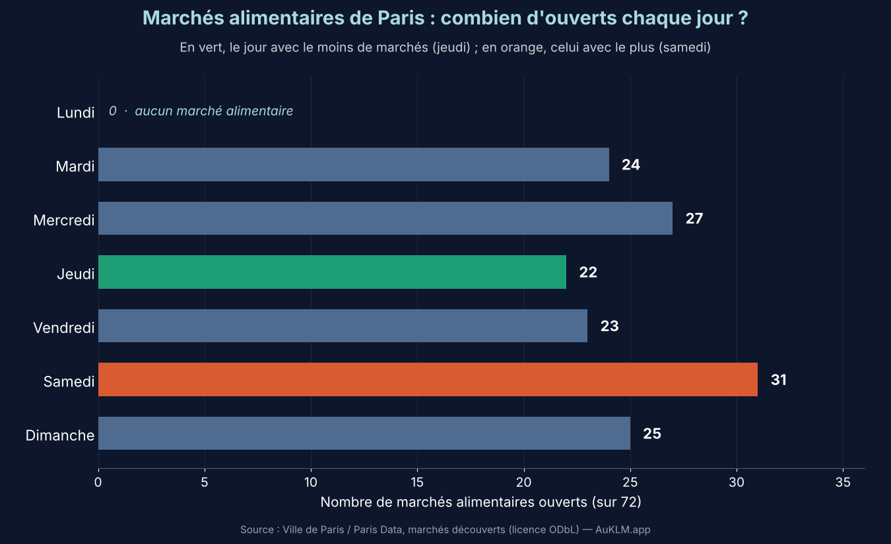

Le marché, c'est le bruit des vendeurs, les caddies, la foule — et pour beaucoup de Parisiens, un vrai plaisir du week-end. Mais si l'on cherche un moment plus tranquille pour faire ses courses, y a-t-il un jour à privilégier ? Pour le savoir, nous avons analysé la base ouverte des marchés découverts de la Ville de Paris : 80 marchés, dont 72 marchés alimentaires, avec leurs jours, leurs horaires et leur longueur d'étals.
Le lundi, aucun marché alimentaire
Premier constat : aucun marché alimentaire ne se tient le lundi à Paris. Les seuls marchés ouverts ce jour-là sont des marchés aux fleurs et deux marchés aux puces (Porte de Montreuil et Clignancourt). Pour faire ses courses, il faut donc attendre le mardi.
Le jeudi, le jour le plus tranquille
Les marchés alimentaires ne sont pas répartis également dans la semaine. Voici ce que donne la base, jour par jour :
- Jeudi22 marchés · 7 900 m d'étals
- Vendredi23 marchés · 8 800 m
- Mercredi27 marchés · 9 600 m
- Mardi24 marchés · 9 900 m
- Dimanche25 marchés · 10 200 m
- Samedi31 marchés · 10 300 m
Le jeudi est le jour où il y a le moins de marchés ouverts et le moins de mètres d'étals. Il ne compte que 5 grands marchés (plus de 500 m d'étals), contre 9 le samedi et le mercredi. Le samedi est à l'inverse la journée la plus chargée : 31 des 72 marchés alimentaires (43 %) y sont ouverts.
Un point de méthode : la longueur d'étals est un indicateur de taille, pas un comptage de visiteurs. Nous n'avons pas de données d'affluence. Elle donne toutefois une idée de l'ampleur de l'activité commerciale d'un jour à l'autre.
Les horaires : être là tôt
Sur les 72 marchés alimentaires, 58 se tiennent en semaine de 7 h à 13 h 30, et le week-end jusqu'à 14 h 30. Huit marchés font exception, avec des horaires d'après-midi (10 h – 20 h) : Bercy, Saint-Honoré, Père Chaillet (bio), Bourse, Les Halles, Paris Rive Gauche, Baudoyer et Anvers. Plusieurs sont d'ailleurs ouverts seulement l'après-midi de certains jours — le vendredi après-midi à Anvers et à Paris Rive Gauche, par exemple.
Pour la tranquillité, le conseil reste simple : arriver à l'ouverture. En fin de matinée, l'affluence est souvent plus forte.
Les plus grands marchés
Si vous cherchez à les éviter — ou au contraire à les visiter — voici les plus longs, tous marchés alimentaires confondus :
- Daumesnil (12ᵉ) · mardi, vendredi1 182 m
- Bastille (11ᵉ) · jeudi, dimanche1 140 m
- Belleville (11ᵉ) · mardi, vendredi1 068 m
Et autour du marché ?
Nous avons aussi regardé le score de calme moyen des rues situées à moins de 200 m de chaque marché. Les quartiers les plus calmes autour d'un marché sont Auteuil (99,4/100), Berthier (98,8), Jeanne d'Arc (98,4), Saint-Charles (98,3) et Bobillot (97,8). Les moins calmes sont Bastille (73,6), Bourse (76,8), Maubert (77,5) et Popincourt (79,4). La moyenne de toutes les rues de la carte est de 91,6.
Une limite à connaître : le score de calme intègre lui-même une pénalité liée à la présence des marchés découverts, pondérée par leur nombre de jours d'ouverture. Les rues proches d'un marché ont donc mécaniquement un score un peu plus bas. Ce classement montre le calme global du quartier autour du marché, pas l'effet du marché seul.
Le bon plan
- Le plus tranquille : un jeudi, à l'ouverture, dans un marché de taille moyenne.
- À éviter si possible : le samedi matin dans un grand marché.
- Pas le choix du jour ? Les marchés d'après-midi (Bercy, Saint-Honoré, Anvers…) sont une alternative si vous ne pouvez pas y aller le matin.
Pour voir le calme de votre rue, de votre marché et des parcs alentour, la carte interactive est là. Et pour comprendre comment le score est construit, lisez notre article sur les 4 000 rues parisiennes ou le classement des arrondissements.
Voir la carte du calme de Paris
AuKLM est un projet citoyen indépendant, gratuit et sans publicité. Sources : Ville de Paris/Paris Data (marchés découverts), Bruitparif, OpenStreetMap — toutes sous licence ouverte.